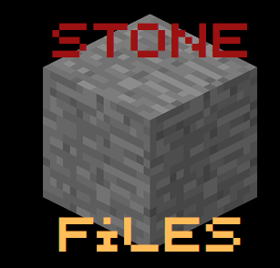

StoneFiles
The community board and archive dedicated to Minecraft's Alpha and Beta eras. Preserving block history since day one.
Chi siamo
This is a place to share seeds, legacy mods, historical guides, and memories from the golden era of Minecraft.